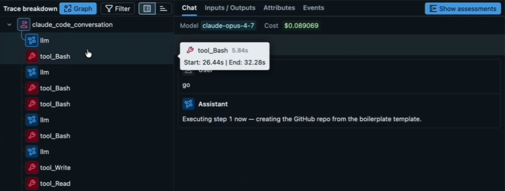
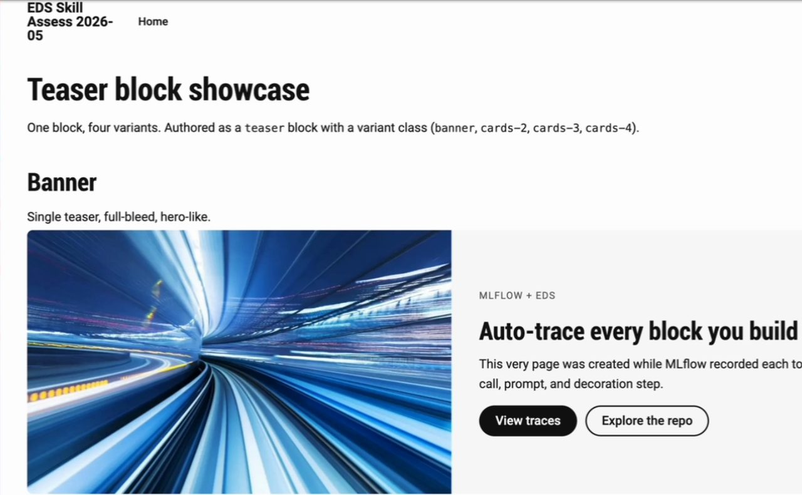

I wrote it up in the same four parts as the video. Each part links to its moment in the video if you'd rather watch.
First published as a LinkedIn video on May 17, 2026. Rewritten for this site in October 2026. Code: eds-skill-assess-2026-05, the site, the teaser block and the MLflow hook. Skills: adobe/skills at 03fc683, the version on main the day I recorded.
1. Tracing the run, and a hook that shows which skill fired
There's a lot of conversation about skills as a service and how much Adobe's skills could change EDS work, but not much footage of anyone driving them. So I picked two and put them through a small assessment. create-site is a multi-step skill that creates a new site. content-driven-development, CDD for short, is a bigger one that loads other skills as it goes. If something goes wrong in this run, it's more likely my ability to use them than anything Adobe did.
Adobe's Developing with AI Tools page lists the skills and how to install them. In Claude Code it's two commands:
/plugin marketplace add adobe/skills
/plugin install aem-edge-delivery-services@adobe-skillsTraces come first in the framework I used to judge the run. With skills, my first question is whether the agent picked up Adobe's skill at all. Only then do I ask whether it did well. So MLflow traced every Claude Code session: each prompt became a trace, with the turns it took and the tools it called. Then I compared the output with what people usually do on an EDS project.

About ten minutes into the build I hit the first wall. MLflow showed me tool calls, and only tool calls. A skill can start two ways in Claude Code. The model can call the Skill tool, which MLflow records as a generic tool_Skill span with the skill's name buried in its input. Or I can type the skill as a slash command, like /content-driven-development, which skips the tool call entirely, so MLflow records no span for it at all.
That evening I had Claude build a small Stop hook to fix it. Claude Code runs it when a session stops, alongside MLflow's own hook. It reads the session transcript, finds both kinds of skill calls, and writes them onto the trace as tags, so a search like tags.skills_used LIKE '%create-site%' finds every trace that used the skill. This is the part that finds them:
if isinstance(content, list): for part in content: if ( isinstance(part, dict) and part.get("type") == "tool_use" and part.get("name") == "Skill" ): skill = (part.get("input") or {}).get("skill") if skill: invocations.append({ "skill": skill.strip(), "source": "model_tool_call", "timestamp": ts, }) if isinstance(content, str): for m in COMMAND_TAG_RE.finditer(content): name = m.group(1).strip().lstrip("/").strip() if not name or name in BUILTIN_COMMANDS: continue invocations.append({ "skill": name, "source": "slash_command", "timestamp": ts, })Below is a short demo session in the transcript format the hook reads. Untick a line to drop it from the session, and compare what MLflow records on its own with the tags the hook adds. The slash command leaves no span at all, and each Skill call shows up only as a generic tool_Skill, which is why I couldn't search MLflow for a skill by name until the hook existed.
Lines in this session (demo lines, in the format the hook reads)
What MLflow records on its own
no span/content-driven-developmenttool_Skillname only inside the inputtool_Bashno span/compacttool_Skillname only inside the input
Tags the Stop hook writes on the trace
skills_used ["building-blocks", "content-driven-development", "testing-blocks"] skills_used_count 3 skills_unique_count 3 skill_invocation_sources ["model_tool_call", "slash_command"] skills_used_breakdown {"content-driven-development": 1, "building-blocks": 1, "testing-blocks": 1}
MLflow alone names none of the 3 skills. The hook tags all 3 on the trace. Built-in commands like /compact are dropped. The Bash call is a tool, not a skill.
skill_tracker.py at a4bcb3c and run in your browser.Two lines of setup make it run. In the project's .claude/settings.json, the Stop hooks list MLflow's autolog claude stop-hook first and skill_tracker.py second. The hook retries its trace lookup a few times because both hooks fire in parallel and MLflow may not have written the trace yet. You can see the tags at work in my next video's trace, where skill_invocation_sources sits at the top of the trace.
Watch this part0:52 The framework6:01 The create-site traces
2. create-site stands up a new EDS site, with one human step
create-site starts a brand-new Edge Delivery site from scratch: a GitHub repo from Adobe's boilerplate, the AEM Code Sync app, the first pages in DA, and a preview URL. What I liked right away is that it shows its execution plan before doing anything, so I, the engineer and architect, can review what it's about to do. The plan comes straight from the checklist at the top of the skill:
- Gather inputsGitHub org, repo name and site name. It doesn't continue until it has all three.SKILL.md lines 53 to 61
- Create the GitHub repository
gh repo createwith--template adobe/aem-boilerplate, or the GitHub API ifghisn't there.lines 65 to 96 - Install AEM Code Sync, a human actionThe skill can't do this one. It hands you the install URL and waits for you to reply "done", then checks the admin status endpoint.lines 100 to 117
- Authenticate with DAChecks for a cached IMS token in
~/.aem/da-token.jsonand whether it has expired before starting a new login.lines 121 to 159 - Create the initial content in DA
nav,footerandindex, the three pages every EDS site needs.lines 163 to 224 - Trigger previewPreviews all three paths through the admin API.lines 228 to 246
- Hand offThe preview URL, the DA links and the commands to start developing locally.lines 250 to 271
All of it made sense. I already had a DA token cached, and the skill knew it was still valid until the next day. The AEM Code Sync step was mine. I did it in the browser while the other steps ran: add the new repo, give the app access, and the site was registered.
Is this faster than clicking through the UI? Yes, absolutely. The first time you create an EDS site, you should probably click through and follow Adobe's instructions so you know what's happening. The tenth time, a skill like this saves quite a bit of time.
This is also where I broke my own test a little. Partway through, I decided I wanted the Author Kit as my starting point instead of everything the skill was setting up. So I jumped in with screenshots and told the agent what I'd done: we have some content, but no navigation yet. That makes part of this assessment about a human and an agent working together, not the skill on its own.
The traces showed the rest. The GitHub repo was created correctly, my assessment files were moved over, and somewhere in the middle the agent added .gitignore and .hlxignore entries for the MLflow files. I don't think that came from the skill. Still, it's a plus. Good job, Claude. The live site rendered, DA was running, the links worked, and the skill created the navigation in its fifth step, as written. Overall, Claude Opus 4.7 followed this skill very well.
Watch this part1:49 Starting create-site3:39 The human step4:36 Where I broke my own test6:53 The live site
3. Content-driven development writes the content before the code
CDD is Adobe's big one, and it loads several skills by itself. On camera I said it has seven steps. The SKILL.md on main that day lists eight tasks: start the dev server, analyze and plan, design the content model, find or create test content, implement, lint and test, validate, and ship it. Steps two, three, four and five each hand off to another skill.
I have one small critique. From what I remember studying for my Claude certification exam, a skill should point to its other files near the top, in the first hundred lines or so. CDD gets to its first sub-skill on line 122 of 449, and its list of related skills starts on line 428:
Lines 1 to 100 A sub-skill reference, line 1 on the left, line 449 on the right
- 122
analyze-and-planstep 2 - 147
content-modelingstep 3 - 202
da-authstep 4, when pushing content to DA - 222
find-test-contentstep 4, for an existing block - 256
building-blocksstep 5, which brings intesting-blocks - 428Related Skills list
The new site didn't have many blocks yet, which was perfect. I asked for a teaser block using content-driven development: a banner teaser that works a bit like a hero, plus teasers that hold two, three or four cards side by side, so the layout looks better when there's more than one entry. And I told it to think about what content is needed first, then create the block.
While it ran, I read Adobe's reasoning. Their philosophy is that content comes first, before functionality. Content is a contract between authors and developers, the same way an API is a contract between engineering teams. If you use Universal Editor, those model.json files are literally contracts. It makes a lot of sense to shift into the CDD mindset, and I think it's really cool to see Adobe build that into a skill.
Here's what the contract looked like for the teaser. The author writes one row per entry: an image, an eyebrow in italics, a heading, body text and a link. The block's code promises to turn exactly that into the layout. Pick a change an author might make and see what the block's real decorate() function does with it. Small differences in the authored content change the markup, which is why CDD settles the content before it writes the code.
What the author writes
The block in the DA document (rows based on the /teasers test page)
| Teaser (cards-3) | |
|---|---|
| image | Scale Content at scale Publish more in less time with smaller teams. Learn how |
| image | Predictability Previews at 100% fidelity What authors see is what visitors get. Try a preview |
| image | Team Author-friendly by default Anyone who can edit a document can publish a page. See the workflow |
Matches the contract. The variant comes from the block name: cards-3. Each first paragraph that holds only italics becomes the eyebrow, and the last paragraph of links becomes buttons.
What decorate() turns it into
<div class="teaser cards-3">
<ul>
<li class="teaser-item">
<div class="teaser-visual"> <picture>
<div class="teaser-text">
<p class="teaser-eyebrow"> Scale
<h3> Content at scale
<p> Publish more in less time…
<p class="teaser-ctas">
<a class="button primary"> Learn how
<li class="teaser-item"> …2 more
The decorated block, drawn with rules modeled on teaser.css
decorate() from 4a15caf, run in your browser on rows based on the test page the skill authored. Images are left out.The PR the skill opened tells the same story in its own words. It pushed a /teasers test page to DA covering all four variants, checked that the undecorated divs came through the dev server, wrote teaser.js and teaser.css against that real content, tested at 375, 768 and 1280 pixels with no console errors, and got lint clean.

A few other things I noticed along the way:
- It put the teasers on the homepage. I was hoping for a block library page out of the box, since the skill clearly knew about one, but maybe not.
- It tests a lot with Playwright, through the CLI or MCP. That's great if you want to watch AI work for you. Headful browsers can be disruptive, though. I usually run several Claude Code sessions at once and prefer things headless so I don't get interrupted.
- It created a pull request by default instead of committing to the main branch, so definitely points there.
- It takes a while. The long run took about 83 turns and many tool calls. My prompt log has the CDD prompt at 4:05 PM and my "ship it" at 4:17 PM. It takes a bit of tokens and quite a few minutes, but at the end I had properly authored, content-first content and a site that gave me what I asked for.
Since this was a test project, I told the agent to merge PR 1 with gh and go back to main for the next test.
Watch this part7:40 Starting CDD8:41 The teaser prompt9:31 Content as a contract12:18 A PR by default
4. What I'd want next is a skill that themes a new site
I didn't find any skill from Adobe that manages themes. If I were doing a project agentically, I'd create the site first. Then, before building any blocks, I'd get the default content looking right: the typography and the style system, as much as possible. Only then would content-driven development start. Later that afternoon I asked Claude straight out whether anything in Adobe's skills styles the whole site or generates its styles.css. It didn't find one.
The other thought I had while CDD was running is about parallel work. Once you have a real design theme, from Google Stitch or something similar, you can have Claude build several blocks in parallel. Anyone who has played with harnesses knows AI generates code fast now. The output isn't the bottleneck anymore. The input and the process you give it are. So my immediate thought with CDD was: can we run ten of these at the same time, and what would we fix in the input, the skill or the harness to make that work? While CDD ran, I showed a more mature page from a different session, one with a proper design system, where everything on the page came from a single prompt with the blocks built in parallel.
A week later I took my own run at the theme step, theming this same site with Google Stitch and MCP. In August I tried Adobe Stardust, which redesigns an existing site. Its own description says it's not for designing a brand-new site from scratch, so the greenfield theme step is still a gap in my book. When I rechecked on October 3, 2026, CDD on main still listed eight tasks with its first sub-skill on line 122.
There's a lot more to try: Adobe's content import skills, the DA Live MCP server and the authentication pieces Adobe has built.
Watch this part11:14 Parallel blocks11:58 A page built in parallel13:22 The missing theme skill